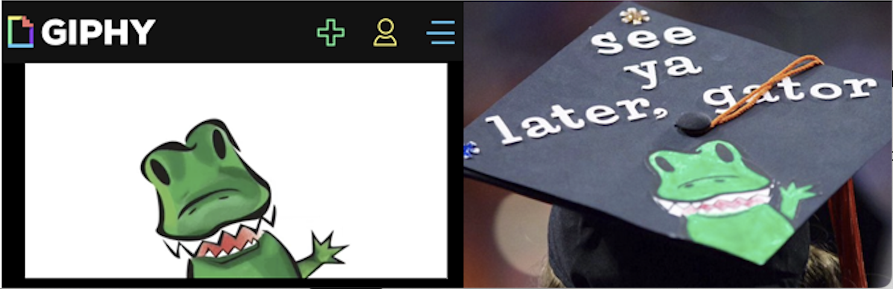
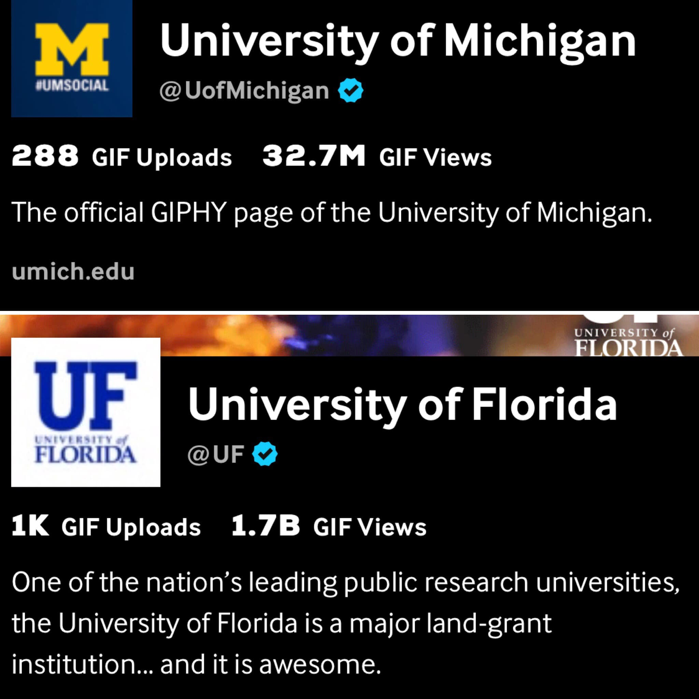
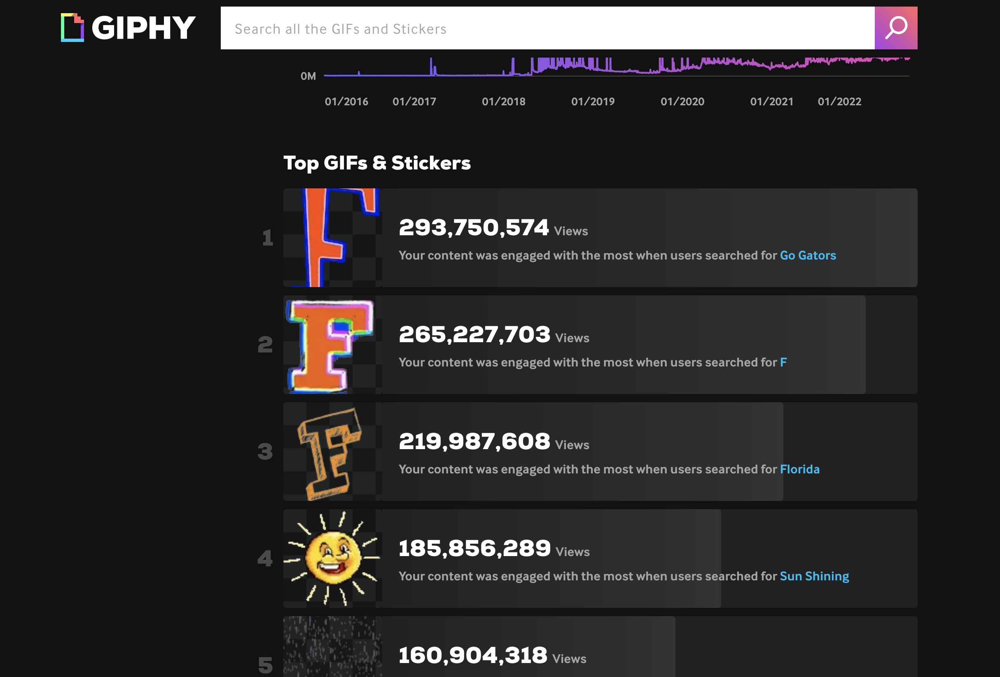
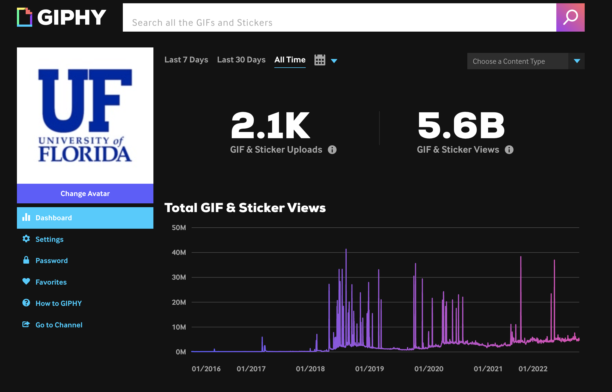
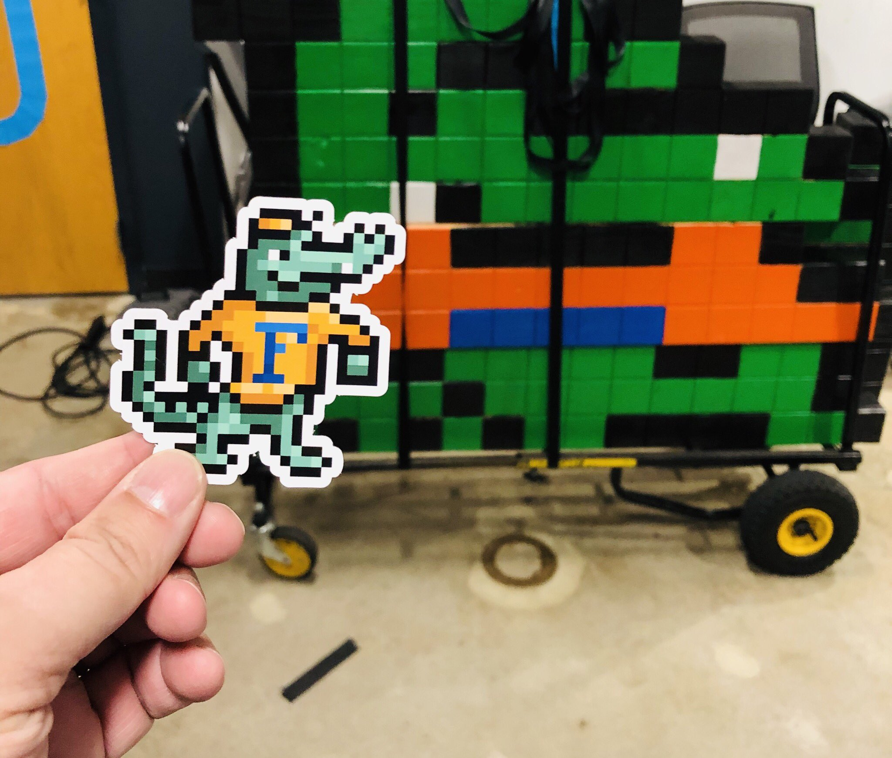
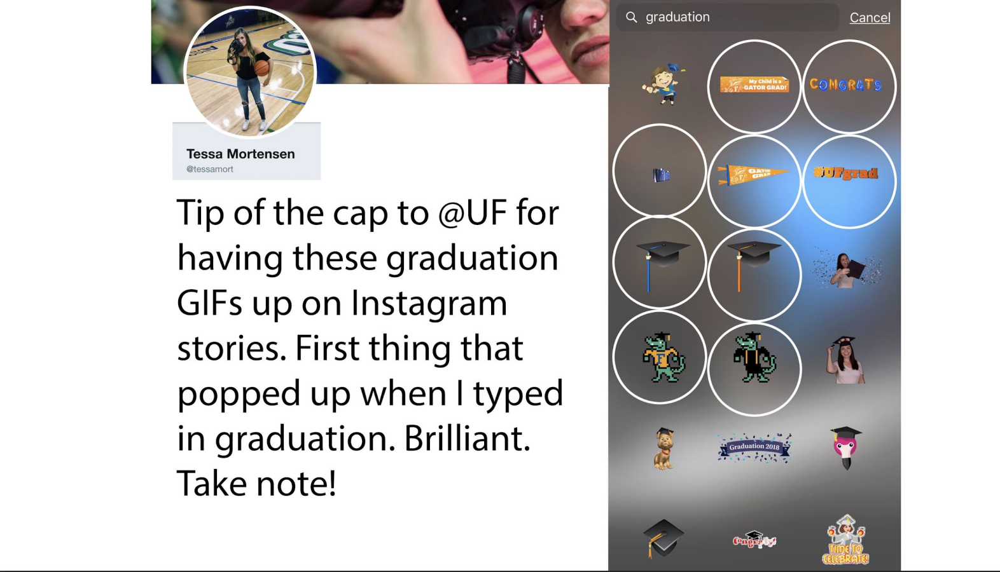
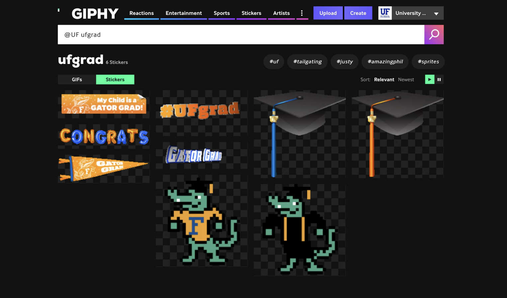

GIFs FTW!
UF set out to beat Harvard on Giphy. They became the first university to 1 billion GIF views — and kept going, ultimately outpacing Google, Nike, Facebook, Starbucks, and Taco Bell.
The goal
Harvard was on Giphy. UF wanted to be associated with top academic institutions — and saw an opportunity to dominate a platform that few universities were taking seriously. The strategy was simple: build a massive, high-quality GIF library, get it integrated into social keyboards, and let the internet do the rest.

The strategy
As Giphy grew into the backbone of social media expression — powering GIF keyboards inside iMessage, Twitter, Instagram, Slack, and virtually every major platform — having a strong Giphy presence meant embedding UF into everyday digital conversations. Every time someone searched "go gators," "Florida," or even just "F," a UF GIF could appear.
The team built a deliberate library of over 2,100 GIFs and stickers — game day moments, campus scenes, mascot animations, seasonal content, and stickers designed to perform in search. The goal wasn't just views. It was ubiquity.
The competition
The benchmark was Harvard. But as UF's numbers climbed, a new comparison emerged — not just against other universities, but against major brands. By July 2021, UF's 4 billion views placed it above Google, Nike, Facebook, Starbucks, Taco Bell, McDonald's, Wendy's, Amazon, Coca-Cola, and Mercedes-Benz. Only Netflix, Disney, and ESPN ranked higher.
Versus the competition in higher ed
The comparison against Michigan tells the story clearly. With 1,000 uploads to Michigan's 288, UF's 1.7 billion views at that snapshot dwarfed Michigan's 32.7 million — a 52x advantage with roughly 3.5x the content volume. The gap wasn't just about output; it was about strategy.

Top performing GIFs
The top five GIFs alone account for over 1.1 billion views. The most-viewed GIF — an animated Florida "F" — was triggered most often when users searched "Go Gators," embedding UF into game day conversations across every platform that used Giphy's keyboard.

When a GIF goes physical
One pixel-art Albert the Alligator GIF became so popular on campus that the team built a life-size physical version out of colored blocks — and took it around campus for students to pose with. Photos of the installation spread organically across social media, extending the GIF's reach into the real world and back online again. A piece of digital content had become a campus landmark.


The reach didn't stop there. One of UF's most-viewed GIFs — Albert the Alligator waving hello — appeared hand-painted on a student's graduation cap at commencement. A GIF that had been viewed hundreds of millions of times online found its way onto someone's most important day. That's not a metric. That's meaning.
The win
What started as a deliberate move to outrank Harvard became something much larger — proof that a university social media team, with the right strategy and consistency, could compete at the brand level with the biggest names on the internet. UF didn't just win in higher ed. They won on Giphy.
The community noticed

